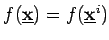

Inhalt Index DeskTop Bronstein

 Optimierung Nichtlineare Optimierung Verfahren für unrestringierte Aufgaben
Optimierung Nichtlineare Optimierung Verfahren für unrestringierte Aufgaben


Ausgehend vom aktuellen Punkt , wird  als Richtung des lokal steilsten Abstieges festgelegt durch
als Richtung des lokal steilsten Abstieges festgelegt durch
Es ist also
| (18.74b) |
Eine schematische Darstellung des Gradientenverfahrens mit den Niveaulinien  zeigt die folgende Abbildung.
Die Schrittweite  wird nach dem CAUCHY-Prinzip, auch Prinzip der Strahlminimierung genannt, ermittelt, d.h.,
wird nach dem CAUCHY-Prinzip, auch Prinzip der Strahlminimierung genannt, ermittelt, d.h.,  löst die eindimensionale Aufgabe
löst die eindimensionale Aufgabe
| (18.75) |
Dazu können Verfahren aus Abschnitt Numerische Suchverfahren herangezogen werden. Das Gradientenverfahren (18.74ab) konvergiert relativ langsam. Für jeden Häufungspunkt  der Folge gilt . Für eine quadratische Zielfunktion, d.h.
der Folge gilt . Für eine quadratische Zielfunktion, d.h.  , besitzt das Verfahren die Form:
, besitzt das Verfahren die Form: